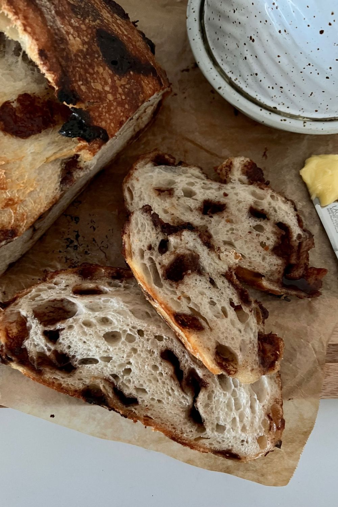

Chocolate Chip Sourdough

A delicious sweet sourdough treat! Chocolate chip sourdough bread gives you the sweetness of chocolate chips combined with the tanginess of a crunchy sourdough loaf.
Home
Ingredients
- 50g Sourdough Starter Fed and Bubbly
- 350g Water
- 500g Bread Flour
- 10g Salt (increase or decrease according to your taste)
- 200g Chocolate Chips (use your favorite ones!)
Instructions
- Autolyse - Premixing The Dough
Weigh out your sourdough starter and water into a large ceramic or glass bowl.
Glass is always good as you can see what's happening underneath your dough. This recipe is based on you having an active starter that you have fed a few hours before starting your bake.
Mix the water and starter together briefly. Then add your flour and salt and mix whole lot together to form a shaggy dough.
The dough will be fairly shaggy and only just brought together.
- Cover your bowl with cling film or a damp tea towel and let it sit for around 1 hour. It's ok if it's a little bit longer, it's not going to matter too much.
This process is called the autolyse and allows your flour to soak in all the water and become hydrated.
- Forming Up The Dough
After the dough has been through autolyse you need to bring it together into a ball. Work your way around the bowl, grabbing the dough from the outside, stretching it up and over itself, into the centre, until a smooth ball is formed. You shouldn't need more than about 20-30 stretches to form the ball.
You'll notice that the dough is fully hydrated after soaking all the water up. It will be fairly sticky but as you bring it into a ball, it will become smoother and shinier.
- Once the dough has formed into a smooth ball, pop the cling film back on and let it rest for 30 minutes.
- Stretch & Fold - Creating Structure
Over the next few hours you need to create some structure for your dough by "stretching and folding".
Aim to do around 4 sets of stretches and folds.
For each set, stretch the dough up and over itself 4 times. Leave around 15 minutes in between each set. Again you do not have to be exact with time, but you need to do 4 sets over 2 hours.
If you don't want to laminate the chocolate chips in the step below, see notes for how to add them during stretch and folds.
- Lamination of Chocolate Chips. Once your dough is nice and elastic, spray your counter with water and pop the dough out of the bowl. Gently stretch the dough out so that it forms a rough square - it doesn't have to be exact.
If you've never laminated dough before, check out these detailed instructions.
Sprinkle the chocolate chips evenly over the dough and then roll it up into a log and place back into the bowl for bulk ferment.
If you don't want to laminate the chocolate chips, see notes for how to add them during the stretching and folding stage.
- Bulk Ferment
Once you've finished your stretch and folds, place the cling film or damp tea towel back over your dough and let it rest and ferment (a plastic cover is a better option for this stage).
See notes below for more info on this step.
- The Dough
Once your dough has finished its bulk ferment, it's time to shape it into either a boule or a batard (see notes for more info).
You will need a banneton to put your dough into. If you do not have a banneton, then a bowl or basket lined with a floured tea towel is perfectly fine. Make sure your bowl isn't too big though, you want your dough to retain some shape.
- Placing Dough Into The Banneton
Liberally dust your banneton with rice flour to stop it sticking.
Place the shaped dough into your banneton smooth side down, so your seam is on the top - this way the top of your dough will get the pretty lines from the banneton.
If you are worried about the dough sticking, you can also add a bit of rice flour around the sides of the dough too, just carefully lift the dough gently with your fingers.
- Cold Ferment
Now the dough is in its "shaping container" cover it loosely with a plastic bag or damp tea towel and place into the fridge.
I use a large plastic bag to cover it - I just reuse it each time.
Try to leave it in the fridge for a minimum 5 hours.
- Preparing To Bake
Once you're ready to bake your sourdough, you'll need to preheat your oven to 230C/450F.
Place your Dutch Oven into the oven when you turn it on so it gets HOT. Try to preheat for around 1 hour to ensure your oven is super hot - but you know your oven so just adjust this time if you need to.
Leave your dough in the fridge until the very last minute - placing a cold dough into a hot oven will give you a great "spring".
- Bake Time!
Now it's time to bake!
When your oven is at temperature, take your sourdough out of the fridge. Gently place it onto a piece of baking paper.
Make sure that you make the baking paper big enough to use the edges as a handle to lower to dough into your Dutch Oven.
Gently score your bread with a lame, clean razor blade or knife. I find a single slash is best for this recipe as the chocolate chips can be tricky to cut through. You can find my full guide on how to score sourdough bread here.
Carefully take your dutch oven out of the oven. Place the sourdough into the pot using the baking paper as a handle. Put the lid on and place into the hot oven.
If you want to you can spritz your dough with extra water before you put the lid on.
BAKE TIME:
30 Minutes with the lid on at 230C/450F plus
10-15 Minutes with the lid off at 210C/410F
- Finishing The Bake
When you remove your dough from the oven, carefully remove it from the dutch oven as soon as possible and place on a wire rack to cool.